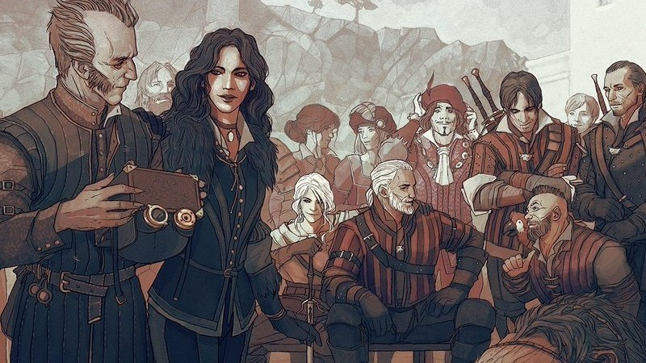
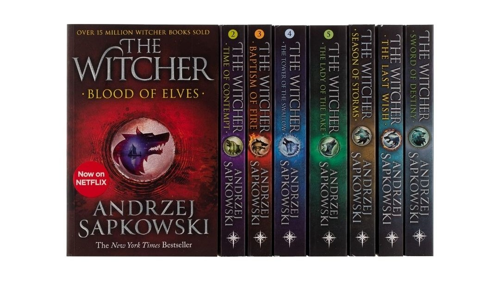

The Witcher began as a series of short stories published in the 1980s-1990s before becoming a full novel series written by the Polish author Andrzej Sapkowski. The first collections, including 'The Last Wish' (in 1993) and 'Sword of Destiny' (in 1992), set Geralt of Rivia as a morally complex monster hunter whose life is marked by both supernatural battles and human dilemmas. Andrzej's story is deep in Slavic mythology and medieval philosophy, with tales that reveal as much about the monsters outside as the monstrous nature of humans.
Books

Over the course of the collection, the adventures expand into a big story. The main novels 'Blood of Elves', 'Time of Contempt', 'Baptism of Fire', 'The Tower of the Swallow', and 'The Lady of the Lake', follow Geralt's (reluctant) mentorship of the young Princess Ciri, whose powers and mysterious lineage are central to the future of the world. The book series explore themes like destiny, sacrifice, and of good vs evil with the characters of the fierce Yennefer and the charming Dandelion (Jaskier in the TV series). The storytelling of Andrzej is well noted for a combination of not only dark humour, but political intrigue and a reflection on human nature. These book series earned critical acclaim and earned international readers.
In the fantasy genre these books have had quite an impact because they changed classic cliches. The characters are not as simple as they might seem because all of them are flawed and complex in their own way, who's own personal quests intersect with broader conflicts. The lore, magic system, and morally questionable situations make the Witcher's universe rich and detailed. This book collection has inspired adaptations such as the Netflix TV series and the 3 videogames, these books have set their place as a large influence in modern fantasy.
